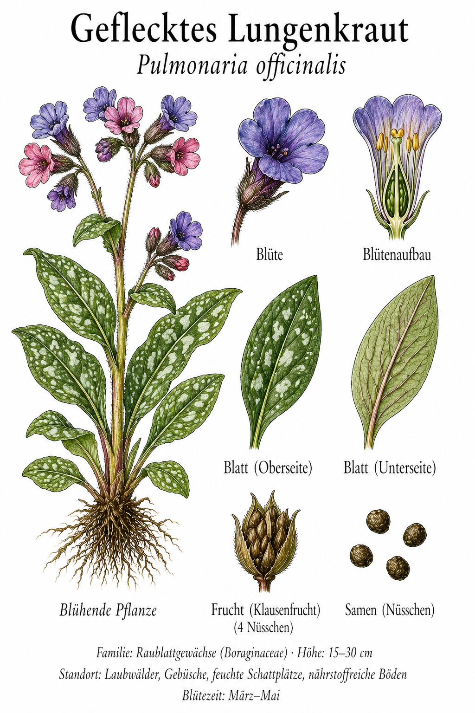
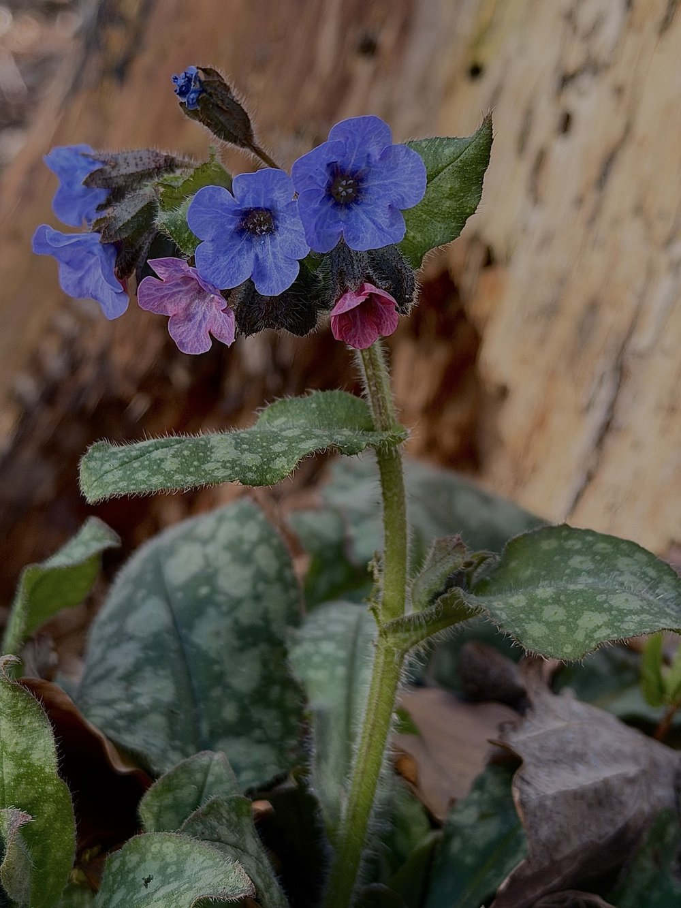

Rosa oder blau? Das ist keine Frage der Mode, sondern der Chemie.


Die chemische Farbampel
Frische Blüten sind rosa – Nektar voll, unbesucht. Nach der Bestäubung steigt der pH-Wert des Zellsafts, und die Anthocyane erscheinen blauviolett. Für Hummeln bedeutet rosa: anhalten. Blau: weiterfliegen, schon leer. Pflanze und Bestäuber sparen beide Energie. Dieses System kann man an einer einzigen Pflanze live beobachten.
Signaturenlehre – ein seltener Glücksfall
Die weissen Flecken der Blätter erinnerten mittelalterliche Heiler an erkranktes Lungengewebe. Nach der Signaturenlehre: Ähnlichkeit mit dem Organ = Heilmittel. Erstaunlicherweise stimmt es: Die Schleimstoffe schützen wirklich die Schleimhäute. Völlig falsche Begründung – korrektes Ergebnis. Ein botanischer Glücksfall.
Wissenswertes & Merksätze
Farbwechsel zum Anfassen
Rotkohl-Saft mit Essig wird rosa, mit Natron blau. Dasselbe Anthocyan-Prinzip wie beim Lungenkraut. Ein Experiment für zuhause.
Zwei Blütenformen (Heterostylie)
Langgriffler und Kurzgriffler – nur Kreuzungen zwischen beiden setzen vollständig Samen an. Eleganter Schutz gegen Inzucht.
Ganzjährig erkennbar
Die gefleckten Blätter bleiben oft bis Dezember grün – kein enges Zeitfenster für Anfänger.